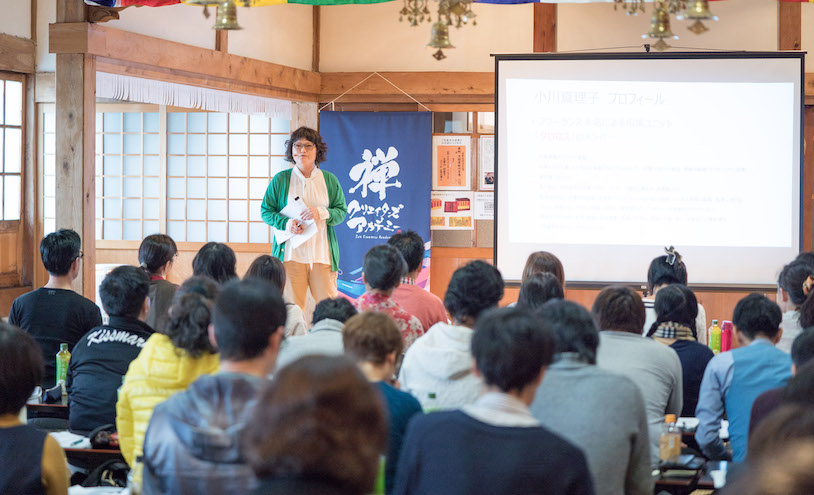
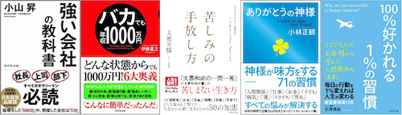
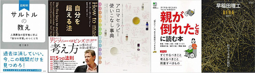

<!DOCTYPE html>
<html lang="ja">
<head>
	<meta charset="utf-8">
	<meta http-equiv="X-UA-Compatible" content="IE=edge">
	<meta name="viewport" content="width=device-width, initial-scale=1">
	<!-- The above 3 meta tags *must* come first in the head; any other head content must come *after* these tags -->
	
	<!-- Website Title -->
	<title>ライティングレールス文章力講座</title>
	
	<!-- OG Meta Tags to improve the way the post looks when you share the page on LinkedIn, Facebook, Google+ -->
	<meta property="og:site_name" content="" /> <!-- website name -->
	<meta property="og:site" content="" /> <!-- website link -->
	<meta property="og:title" content=""/> <!-- title shown in the actual shared post -->
	<meta property="og:description" content="" /> <!-- description shown in the actual shared post -->
	<meta property="og:image" content="" /> <!-- image link, make sure it's jpg -->
	<meta property="og:url" content="" /> <!-- where do you want your post to link to -->
	<meta property="og:type" content="article" />
	
	<!-- SEO Meta Tags -->
	<meta name="description" content="">
	<meta name="keywords" content="">
	
	<!-- Styles -->
	<link href="css/bootstrap.css" rel="stylesheet">
	<link href="css/font-awesome.css" rel="stylesheet">
	<link href="css/swiper.css" rel="stylesheet">
	<link href="css/magnific-popup.css" rel="stylesheet">
	<link href="css/styles.css" rel="stylesheet">

	
	<!-- Favicon  -->
    <link rel="icon" href="images/logo.png">
	
	<!-- HTML5 shim and Respond.js for IE8 support of HTML5 elements and media queries -->
	<!-- WARNING: Respond.js doesn't work if you view the page via file:// -->
	<!--[if lt IE 9]>
		<script src="https://oss.maxcdn.com/html5shiv/3.7.2/html5shiv.min.js"></script>
		<script src="https://oss.maxcdn.com/respond/1.4.2/respond.min.js"></script>
	<![endif]-->
	
</head>
	<!-- Preloader -->
	<div class="spinner-wrapper">
		<div class="spinner">
			<div class="bounce1"></div>
			<div class="bounce2"></div>
			<div class="bounce3"></div>
		</div>
	</div>
	<!-- HEADER -->
	<div>
 		<div class="container text-center" id="header">
			 <div class="row"></div>
			<div class="row col-md-10 col-md-offset-1 page-scroll" style="margin-top: 50px;">
				<h1><span class="textbig">「書く力」</span>は、一度身につけると<br>一生使い続けることができる力です。</h1>
			</div>
			<div class="row col-md-8 col-md-offset-2" style="margin-top: 30px;">
			<p class="heading-paragraph">通算300冊の出版に携わったプロライター講師から<br>「人を動かす」文章の極意を学び<br>仕事に直結する「文章力」を手にいれる動画講座</p>
			</div>
		</div>
	</div> <!-- end of header -->
		<div>
			
			<div class="container">

				<div class="row col-md-10 col-md-offset-1 clearfix" style="margin-top: 30px;">
					
					<div class="float-left text-center textsmall" style="width: 30%; float: left;">
					<p>インタビュー取材法</p>
					<p>興味深いタイトルのつけ方</p>
					<p>SNSで炎上しない文章</p>
					<p>ビジネスメールの書き方</p>
					<p>企画書・報告書の最適化</p>
					</div>
					<div class="float-right text-center textsmall" style="width: 30%; float: right;">
					<p>正しい文章の書き方</p>
					<p>SNSで炎上しない文章</p>
					<p>まとめる・落とし込む技術</p>
					<p>文章を速く書く技術</p>
					<p>選ばれるプレスリリース</p>
					</div>
					<div class="top2-image-pane">
					</div>
				</div>
			</div>
		</div> <!-- end of header -->
		<div class="top clearfix">
			<div class="top-image-pane">
			</div>
		</div>

		<!-- PROBLEM -->
		<div class="problem">
			<div class="container problemcenter">
				<div class="row">
					<div>
						<h2 class="white1 col-md-6 text-center" >このようなことに悩んでいませんか？</h2>
					</div>
				</div>
					<div>
						<ul class="col-md-6 border" style="list-style: inside;"> 
							<li class="borderlist white2">文章を書くことに苦手意識があり、何をどう書いて良いかわからない</li>
							<li class="borderlist white2">自社の商品やサービスの魅力が伝わる文章が書けない</li>
							<li class="borderlist white2">ブログやメルマガで何を書いて良いかわからない</li>
							<li class="borderlist white2">炎上するのが怖くて、SNSで情報発信できない</li>
							<li class="borderlist white2">文章を書くスピードが遅い</li>
							<li class="borderlist white2">だらだらとまとまらない文章を書いてしまう</li>
							<li class="borderlist white2">文章を書く上での情報収集や資料の選び方がわからない</li>
							<li class="borderlist white2">取引先やお客さんとのメールのやり取りが苦手</li>
							<li class="borderlist white2">商品の購入、売り上げにつながる文章が書けない</li>
						</ul>
					</div>
			</div> 
		</div> 
		<!-- end of PROBLEM -->
		<!-- PROBLEM2 -->
		<div class="problem2">
			<div class="container">
				<div class="text-center" style="margin-bottom: 25px;">
					<a class="button-solid" href="#your-link-here" style="font-size: 30px;">お申し込みはこちら</a>
				</div>
				<div class="row"Ω>
				<h2 class="text-center col-md-8 col-md-offset-2">文章が書けないのは<br>コミュニケーション能力が低いから</h2>
				</div>
				<div class="col-md-10 col-md-offset-1" style="margin-top: 30px; text-align: justify;">
				<p>人の悩みの大半は、「お金」「健康」「人間関係」の中にある、といわれています。</p>
				<p>この３つのなかで、とくに自分でのコントロールが難しいのは、<span class="custom">「人間関係」</span>です。他人の行動や考え方を思い通りにすることはできないからです。</p>
				<p>仕事で成果を上げるには、<span class="custom">人とコミュニケーションを取りながら</span>、協力し合い、物事を一緒に進めていく必要があります。</p>
				<p>けれど、</p>
				<p>「自分の気持ちをうまく伝えることができない」「上司の指示をうまく汲み取れない」</p>
				<p>といった些細なコミュニケーションのすれ違いが、結果的に<span class="custom">大きなミス</span>につながってしまった、という経験をお持ちの方は多いのではないでしょうか。</p>
				<p>仕事の場面だけでなく、家族・友人・恋人など、あなたにとって大切な人と、意見や気持ちのすれ違いが起こることもあります。</p>
				<p>自分の考えを正しく、わかりやすく伝えることができなかったり、<span class="custom">誤解を与える表現</span>をしてしまったり、相手の話にきちんと耳を傾けなかったことが原因です。</p>
				<p>「言いたいことを、しっかりと相手に伝える」「相手が言っていることを、正しく理解する」</p>
				<p>この２つをしっかりと押さえるだけで、日常における人間関係のトラブルをぐんと減らすことができます。<br>でも、<span class="custom">どうやってコミュニケーションスキルを身につければよいかわからない……</span></p>
				<p>そんな方におすすめなのが、<span class="custom">「文章の書き方」</span>を学ぶことです。</p>
				<p>なぜ、文章の書き方を学ぶと、コミュニケーション能力が身につくのか</p>
				<p>文章を書く目的は、人に自分の思いを伝えたり、物事を整理したり記録をしたり、<span class="custom">相手に正しく行動してもらう</span>ために行うことです。</p>
				<p>自分のための記録としてだけではなく、読み手に伝える（正しく伝わる）ことを意識した書き方を身につけることで、<span class="custom">自然にコミュニケーション能力が向上する</span>のです。</p>
				<p>◉正しい文章の書き方を学び、「人にわかりやすく伝えるコツ」や「表現力」が身につくと、自然と話し方が変わる</p>
				<p>◉文章の構成力（どのような内容を、どのような順番で書くか）が身につくと、相手の言いたいこと、伝えたいことを読み取ることができるようになる</p>
				<p>「ライティングレールス文章力講座」では、<span class="custom">正しい文章の書き方の基本から、人に伝わる文章の書き方、話の聞き方、情報や資料の集め方などを、実際に20年以上現場でプロライターとして活躍されている講師から、指導を受けることができます。</span>
				</p>
				</div>
			</div>
		</div>
		<!-- end of PROBLEM2 -->
		<!-- SKILLS -->
		<div class="about clearfix">
			<div class="about-image-pane">
			</div>
			<div class="about-text-pane">
				<div class="about-text-pane-holder clearfix">
					<div class="row">
					<h2 class="text-center col-md-8 col-md-offset-2">この講座で学べること<br>手に入れることができるスキル</h2>
					</div>
					<div class="col-md-8 col-md-offset-2 ">
					<ul class="border" style="margin-top: 10px; text-align: justify; list-style: inside;">
						<li class="borderlist">正しい文章の書き方と、人に<span class="custom">わかりやすく伝える表現力</span></li>
						<li class="borderlist"><span class="custom">自分の考えをまとめ</span>、文章に落とし込む技術</li>
						<li class="borderlist">相手の意図を汲み取り、やりとりを円滑にする<span class="custom">コミュニケーション能力</span></li>
						<li class="borderlist">自社の商品やサービスを紹介し、<span class="custom">収益につなげるための文章力</span></li>
						<li class="borderlist">ブログやメルマガ、LPやECサイト、SNSで炎上しない<span class="custom">共感を得る文章</span>のコツ</li>
						<li class="borderlist"><span class="custom">業務を効率的に行う</span>ための速く書く技術</li>
						<li class="borderlist"><span class="custom">つい読んでしまう</span>、見出し、タイトルのつけ方</li>
						<li class="borderlist">心を動かし、<span class="custom">行動をうながす</span>、「感動」文章の書き方</li>
						<li class="borderlist">プロが教えるインタビュー術と<span class="custom">効率的な情報収集</span>のコツ</li>
						<li class="borderlist"><span class="custom">信頼を得るためのプロフィール</span>や会社案内の書き方</li>
						<li class="borderlist"><span class="custom">成果の出る</span>セールスレターの書き方</li>
						<li class="borderlist">選ばれる<span class="custom">プレスリリース</span>の書き方</li>
						<li class="borderlist"><span class="custom">取引が円滑に進む</span>ビジネスメールの書き方</li>
						<li class="borderlist">通算300冊のを実績を誇る、プロライターが伝授する<span class="custom">「書くための心得」</span></li>
					</ul>
					</div>
				</div>
			</div>
		</div> 
		<!-- end of SKILLS -->
		<!-- POINTS -->
		<div class="solutions">
			<div class="container">
				<h2 class="col-md-8 col-md-offset-2">ライティングレールス文章力講座が<br>他のライティング講座と違う３つのポイント</h2>
				<!-- Tabs -->
				<div class="solutions-tabs">
					<ul class="nav nav-pills nav-justified">
						<li class="active" style="border-style: none;"><a href="#tab_a" data-toggle="tab">ポイント１</a></li>
						<li style="border-style: none;"><a href="#tab_b" data-toggle="tab">ポイント２</a></li>
						<li style="border-style: none;"><a href="#tab_c" data-toggle="tab">ポイント３</a></li>
					</ul>
				</div>
				<!-- Tab Content -->
				<div class="tab-content" style="text-align: justify;">
					<!-- Tab_a -->
					<div class="tab-pane tab-a fade in active" id="tab_a">
						<div class="row">
							<div class="col-md-6">
								
							</div>
							<div class="col-md-6">
								<div class="right-pane">
									<h3>仕事に活かせる「ライティングスキル」をくまなく習得</h3>
									<p>「ライティングレールス文章力講座」＝「ライターになるための講座」だと思っている方も多いのではないでしょうか？</p>
									<p>「ライティングレールス文章力講座」は、「プロのライターになりたい人」だけでなく、毎日使う「ビジネスメール」や「ブログ」の書き方から、「会社案内」「ホームページ」の作り方まで、「ライターには興味がないけれど、今のお仕事でライティングを活かしたい」という方にもおすすめです。
									</p>
								</div>
							</div>
						</div>
					</div>
					<!-- end of tab_a -->
		
					<!-- Tab_b -->
					<div class="tab-pane fade" id="tab_b">
						<div class="row">
							<div class="col-md-6">
								
							</div>
							<div class="col-md-6">
								<div class="right-pane">
									<h3>自分の長所をしっかりとアピール</h3>
									<p>今日から使える「プロフィール」を手に入れることができます。</p>
									<p>今まで自分が取り組んできたこと、趣味、好きなもの、ついついしてしまうクセや習慣……。なかなか振り返る機会のない「自分の歩んできた道」をしっかりと棚卸しして、「自分の長所」「自分の持ち味」を掘り出す時間をつくります。
									</p>
									<p>強みを見つけたら文章に起こし、「自分のプロフィール」を完成させます。</p>
									<p>個人事業主、フリーランス、副業などで働く方はもちろんのこと、転職活動をしたいと思っている方にもおすすめです。</p>
								</div>
							</div>
						</div>
					</div>
					<!-- end of tab_b -->
		
					<!-- Tab_c -->
					<div class="tab-pane fade" id="tab_c">
						<div class="row">
							<div class="col-md-6">
								
							</div>
							<div class="col-md-6">
								<div class="right-pane">
									<h3>あらたな自分を発掘</h3>
									<p>頭で考えていることを文章にすると、自然と頭の中が整理されるようになるので、今まで以上に、自分自身を知ることができます。</p>
									<p>なんとなく感じていたことを「文章」に落とし込むことで、漠然としていた感覚をはっきりと理解することが可能です。</p>
									<p>この「自分の考えを可視化する力」をしっかり身につけることができます。</p>
								</div>
							</div>
						</div>
					</div>
				</div>
			</div>
		</div>
		<!-- end of POINTS -->
		<!-- PROGRAM -->
		<div class="pricing">
			<div class="container">
				<div class="row">
				<h2 class="text-center col-md-8 col-md-offset-2">「ライティングレールス文章力講座」<br>が誇る充実の７プログラム</h2>
				</div>
				<div class="row">
					<div class="col-sm-12 col-md-8 col-md-offset-2">
						<div class="pricing-pane">
							<h3 class="text-center">文章の基礎を学び、ライティングに親しむ<br>文章を自由自在につかいこなす！</h3>
							<hr>
							<p style="text-align: justify;">文章を書くための基礎について学びます。わかりやすい文章の書き方について知るチャンス！<br>また、ライター志望者はもとより、そうでない方にもおすすめなのが、「インタビュー講座」です。<br>ライティングの仕事のみならず、一般のビジネスにもすぐに役立ていただける、「書く」ためのさまざまな方法について具体的にお伝えします。
							</p>
							<hr>
							<ul class="border" style="text-align: justify; list-style-type: decimal;">
								<li class="borderlist">文章の書き方について<br>わかりやすい文章の条件とは？/「愛語」を使うこと/文章を書く目的とは？　ほか</li>
								<li class="borderlist">見出しの付け方について<br>見出しの付け方のポイント/見出しの王道7パターン　ほか</li>
								<li class="borderlist">プロフィールの書き方について<br>プロフィールはどうして大事なの？/プロフィールづくりの３つのポイント/魅力的なプロフィールづくり３つのポイント　ほか</li>
								<li class="borderlist">媒体の書き方について【おすすめ】<br>明日から使える！さまざまな媒体の特徴と、書き方のコツを伝授します。<br>メルマガ/セールスレター・DM
									/プレスリリース/ビジネスメール/会社案内/パンフレット/ホームページ　ほか</li>
								<li class="borderlist">ブログの書き方について<br>ブログを書く目的とは？</li>
								<li class="borderlist">速く書く技術について<br>速く書くためのアイディア/速く書けなかったときの原因と対策　ほか</li>
								<li class="borderlist" style="border: none;">ライターの心得</li>
							</ul>
							
						</div>
					</div>
				<div class="container">
				<div class="row col-md-10 col-md-offset-1" style="margin-top: 50px; text-align: justify;">
					<p>「ビジネスメール」「プレスリリース」「セールスレター」など、ビジネスに直結する文章の書き方。<br>ブログやＳＮＳに代表されるパーソナルな文章の書き方。<br>プロのライターとして活躍するための「記事」の書き方。<br>など、「全方位的」に文章の書き方をレッスンします。
					</p>
					<p>このほか、「書く」ことにまつわる「悩み」「疑問」「不安」についても、しっかりと向き合っていきます。</p>
					<p>文章を書く上で大切にしたい基礎中の基礎の考え方や、ベテランライターであっても悩むポイントを知ることは、大きな経験になるはずです。</p>
					<p>「文章力」「コミュニケーション能力」身につける上で、どの講座も見逃せない、とても大切なものばかりです。</p>
					<p>また、この講座は、実際に手を動かしたり、頭を使う「ワーク」が充実しています。</p>
					<p>「書く」「伝える」「伝わる」という実践的な経験を通して、学んだ内容をアウトプットするので、講座の内容をしっかりと体得することができます。</p>
					<div class="text-center" style="margin-top: 35px;">
					<a class="button-solid" href="#your-link-here" style="font-size: 30px;">お申し込みはこちら</a>
					</div>
				</div>
				</div>
			</div> <!-- end of container -->
		</div> <!-- end of pricing -->
		</div>
		<!-- TESTIMONIALS -->
		<div class="testimonials clearfix">
			<div class="testimonials-image-pane">
			</div>
			<div class="testimonials-text-pane">
				<div class="testimonials-text-pane-container">
					<h3 class="text-center">ライティングレールス文章力講座<br>受講生の声</h3>
					<div id="quote" class="carousel slide" data-ride="carousel" data-interval="8000">
						<ol class="carousel-indicators">
							<li data-target="#quote" data-slide-to="0" class="active"></li>
							<li data-target="#quote" data-slide-to="1"></li>
							<li data-target="#quote" data-slide-to="2"></li>
						</ol>
						<div class="carousel-inner" role="listbox">
							<div class="item active">
								<p>第一線で活躍されている先生の生の声を聞けたことは、貴重な経験でした。課題に対する丁寧な添削にも説得力がありました。</p>
								<p class="text-center">30代 女性（会社員）</p>
								<p>ライティング力は、企画書、報告書など毎日の仕事でも即実践できますし、副業にもつながるお得なスキルだと実感しました。</p>
								<p class="text-center">20代 男性（会社員）</p>
								<p>ライティングの技術はもちろん、ライターとしての心構えも丁寧に教えていただきました。先生もとても魅力的な方たちばかりで楽しかったです！</p>
								<p class="text-center">30代 女性（事務）</p>
							</div>
							<div class="item">
								<p>文章を書くとき、自分の思ったことを書くだけでなく、「誰に伝えるか」ということが大事だと強く感じました！誰かを動かす力を持つ文章を心掛けるようになりました。</p>
								<p class="text-center">40代 女性（事務）</p>
								<p>まったくの初心者ですが、講義を受けたことをきっかけとして、テープ起こし、リライト、セールスレターに挑戦しました。なかでもテープ起こしは、インタビューの仕方、インタビューイの人生哲学を、お金をもらいながら学ぶことができます！インタビューでのやり取りは、本業の営業のお仕事にも生きていますね。
								</p>
								<p class="text-center">30代 女性（会社員）</p>
							</div>
							<div class="item">
								<p>上手な文章には型があるという内容や、日常を大切にするという点で自分の感情が動いたときに理由や原因を探すということが印象に残りました。先生方が、自分自身が過去に読んだ本の編集に携わっておられたことにも驚きました。今日いただいたヒントを日々の商売に生かしていきます。
								</p>
								<p class="text-center">40代 男性（会社員）</p>
								<p>仕事でもプライベートでも、文章は生活の一部です。「相手に伝える」ということは、ほんの少し文章を変えるだけで、ぐんと伝わりやすくなります。ちょっとした伝え方のコツと、考え方のコツを学ばせていただけた貴重な講座でした。
								</p>
								<p class="text-center">30代 男性（自営業）</p>
							</div>
						</div>
					</div> <!-- end of quote -->
				</div>
			</div>
		</div> <!-- end of testimonials -->
		
		<!-- PROFILE -->
		<div class="solutions" style="background-color: white;">
			<div class="container">
				<div class="row">
				<h2 class="col-md-6 col-md-offset-3">講師プロフィール</h2>
				</div>
				<p class="col-md-8 col-md-offset-2">通算300冊の出版に携わり、20年以上にわたり業界の第一線で活躍している2名の講師が、それぞれのライティング人生で得た心構えと技術の全てを伝授します。</p>
				<!-- Tabs -->
				<div class="solutions-tabs">
					<ul class="nav nav-pills2 nav-justified">
						<li class="active"><a href="#tab_a2" data-toggle="tab">プロフィール</a></li>
						<li><a href="#tab_b2" data-toggle="tab">講師からのメッセージ</a></li>
					</ul>
				</div>
		
				<!-- Tab Content -->
				<div class="tab-content">
					<!-- Tab_a -->
					<div class="tab-pane tab-a fade in active" id="tab_a2">
						<div class="row">
							<div class="col-md-6">
								
							</div>
							<div class="col-md-6">
								<div class="right-pane">
									<h3 class="text-center">藤吉 豊（ふじよしゆたか）</h3>
									<p style="text-align: justify; margin-top:">株式会社文道　代表取締役。<br>
										有志4名による編集ユニット「クロロス」のメンバー。日本映画ペンクラブ会員。<br>
										編集プロダクションにて、企業PR誌や一般誌、書籍の編集・ライティングに従事。編集プロダクション退社後、出版社にて、男性情報誌、自動車専門誌、2誌の編集長を歴任。<br>
										2001年からフリーランスとなり、雑誌、PR誌の制作や、ビジネス書籍の企画・執筆・編集に携わる。文化人、経営者、アスリート、グラビアアイドルなど、インタビュー実績は2000人以上。<br>
										2006年以降は、ビジネス書籍の編集協力に注力し、200冊以上の書籍のライティングに関わる。大学生や社会人に対して、執筆指導なども行なっている。</p>
									
								</div>
							</div>
						</div>
					</div>
					<!-- end of tab_a -->
		
					<!-- Tab_b -->
					<div class="tab-pane tab-b fade" id="tab_b2">
						<div class="row">
							<div class="col-md-4">
								
							</div>
							<div class="col-md-8">
								<div class="right-pane" style="margin-top: 20px; text-align: justify;" >
									<p>今回の「ライティングレールス文章力講座」は、受講者のみなさまに「文章に親しんで、そして使いこなしていただく」ため、充実の講義内容を揃えました。<br>基礎的な内容も織り込んで、わかりやすいプログラムになるよう心がけましたが、みなさまの理解をうながすために、出版業界の現状なども踏まえながら、多少、専門的な話をすることもあります。
									</p>
									<p>「書く力」は、一度身につけると、一生使い続けることができる力です。</p>
									<p>もし「書く力」を身に付けたいと感じた方は、どうぞお早めにお申し込みください。</p>
									<p>藤吉豊</p>
								</div>
							</div>
						</div>
					</div>
					<!-- end of tab_b -->
				</div>
				<!-- end of tab content -->
			
				<div class="solutions-tabs">
					<ul class="nav nav-pills2 nav-justified">
						<li class="active"><a href="#tab_a3" data-toggle="tab">プロフィール</a></li>
						<li><a href="#tab_b3" data-toggle="tab">講師からのメッセージ</a></li>
					</ul>
				</div>
		
				<!-- Tab Content -->
				<div class="tab-content">
					<!-- Tab_a -->
					<div class="tab-pane tab-a fade in active" id="tab_a3">
						<div class="row">
							<div class="col-md-6">
								
							</div>
							<div class="col-md-6">
								<div class="right-pane">
									<h3 class="text-center">小川 真理子（おがわまりこ）</h3>
									<p style="text-align: justify;">株式会社文道　取締役。<br>有志4名による編集ユニット「クロロス」のメンバー。日本映画ペンクラブ会員。<br>編集プロダクションにて、雑誌や企業PR誌、書籍の編集・ライティングに従事。フリーになったあとは、電通レイザーフィッシュにて企業のWEBサイトのコンテンツ制作に関わり、仕事の幅を広げる。<br>現在は主に企業や自治体、大学をクライアントとするPR誌やビジネス書、実用書などの編集・執筆に携わる。子ども、市井の人、イケメン俳優、文化人など、インタビューの実績は数知れない。<br>得意なジャンルは「生活」全般と自己啓発など。自ら企画編集執筆した本に『親が倒れたときに読む本』（エイ出版）がある。近年は、ライティング講座にも力を注ぐ。
									</p>
									

								</div>
							</div>
						</div>
					</div>
					<!-- end of tab_a -->
		
					<!-- Tab_b -->
					<div class="tab-pane tab-b fade" id="tab_b3">
						<div class="row">
							<div class="col-md-4">
								
							</div>
							<div class="col-md-8">
								<div class="right-pane" style="text-align: justify; margin-top: 20px;">
									<p>働き方改革が進んだ今、性別を問わず、さまざまな働き方が認められるようになりました。一生ひとつの会社で勤めあげる人もいれば、さまざまな職場を渡り歩く人、事業をおこす人、その選択肢もさまざまです。
									</p>
									<p>とくに、結婚や出産、子育てなどのライフイベントで生活のスタイルががらりと変化する女性にとっては、「書くスキル」は人生に寄り添い続けてくれる強い味方。</p>
									<p>思い通りにいかないときに、自分の気持ちを文字にして冷静に見つめることで気持ちがふっと軽くなることがあります。</p>
									<p>私自身としては、母の介護の傍らでフリーライターを続けてきました。</p>
									<p>時間や場所に縛られない働き方が、自分自身の気持ちの余裕を生み出せたほか、母に向き合う機会も与えてくれました。</p>
									<p>このようにライティングの仕事を請け負うことで「自由な時間」で「お金を稼ぐ」ことも可能です。</p>
									<p>また、文章には、自分を助けるだけではなく、「人を助けたり、読む人を愛で包む力」もあります。</p>
									<p>過去に制作に携わった本に対して、「この本を読んで自殺を思い止まった」と感想をもらったことがありました。</p>
									<p>私は直接その人を救ったわけではありませんが、少なくともその本に関わった一人として、命を救うお手伝いができたのかもしれない、と感じ、「文章で人が救える」ことを、身をもって学んだ忘れられない経験のひとつです。
									</p>
									<p>自分自身の力に、あるいは、自分の大切な人や会ったことのない人の力になれるかもしれない。<br>そんな「文章のちから」を多くの方に身につけていただきたいと思って講座を開催しています。
									</p>
									<p>小川真理子</p>
								</div>
							</div>
						</div>
					</div>
					<!-- end of tab_b -->
				</div>
				<!-- end of tab content -->
								<div class="text-center" style="margin-top: 50px; margin-bottom: 30px;">
									<a class="button-solid" href="#your-link-here" style="font-size: 30px;">お申し込みはこちら</a>
								</div>
								<p class="text-center col-md-8 col-md-offset-2">【相談・問い合わせフォーム】<br>ライティングレールス文章力講座に関する、ご相談、お問い合わせは下記のフォームよりお送りください。担当スタッフより回答させていただきます。</p>
								<div class="text-center col-md-8 col-md-offset-2">
									<a href="" style="font-size: 30px;">相談・お問合せはこちら</a>
								</div>
								<div class="text-center col-md-8 col-md-offset-2" style="margin-top: 50px;">
									<a class="button-top" href="#header">TOPへ戻る</a>
								</div>
			</div>
			<!-- end of container -->
		</div>
		<!-- end of PROFILE -->
		<!-- FOOTER -->
		
		<!-- COPYRIGHT -->
		<div class="copyright">
			<div class="container text-center">
				<div class="row">
					<div class="col-md-12">
						<span>©Copyright2020 ライティングレイルス文章講座.All Rights Reserved.</span>
					</div>
				</div> <!-- end of row -->
			</div> <!-- end of container -->
		</div> <!-- end of copyright -->
		
		
		<!-- SCRIPTS -->
		<script src="js/jquery-2.2.4.min.js" type="text/javascript"></script>
		<!-- jQuery v2.2.4 - necessary for Bootstrap's JavaScript plugins -->
		<script src="js/bootstrap.min.js" type="text/javascript"></script> <!-- Bootstrap v3.3.7 -->
		<script src="js/jquery.easing.min.js" type="text/javascript"></script>
		<!-- jQuery Easing v1.3 for smooth scrolling between anchors -->
		<script src="js/swiper.min.js" type="text/javascript"></script> <!-- Swiper v3.4.2 for image gallery swiper -->
		<script src="js/jquery.magnific-popup.js" type="text/javascript"></script> <!-- Magnific Popup v1.1.0 for lightboxes -->
		<script src="js/imagesloaded.pkgd.min.js" type="text/javascript"></script>
		<!-- imagesLoaded v4.1.3 plugin for Isotope -->
		<script src="js/isotope.pkgd.min.js" type="text/javascript"></script> <!-- Isotope v3.0.4 for portfolio section -->
		<script src="js/waypoints.min.js" type="text/javascript"></script>
		<!-- jQuery Waypoints v2.0.3 required by Counter-Up -->
		<script src="js/jquery.counterup.min.js" type="text/javascript"></script> <!-- Counter-Up v1.0 for statistics -->
		<script src="js/validator.min.js" type="text/javascript"></script>
		<!--  Validator.js v0.11.8 Bootstrap plugin that validates the registration form -->
		<script src="js/scripts.js" type="text/javascript"></script> <!-- Custom scripts -->
		
		</body>
		
		</html>